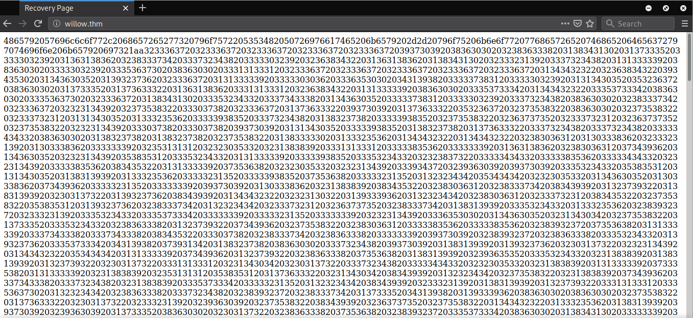
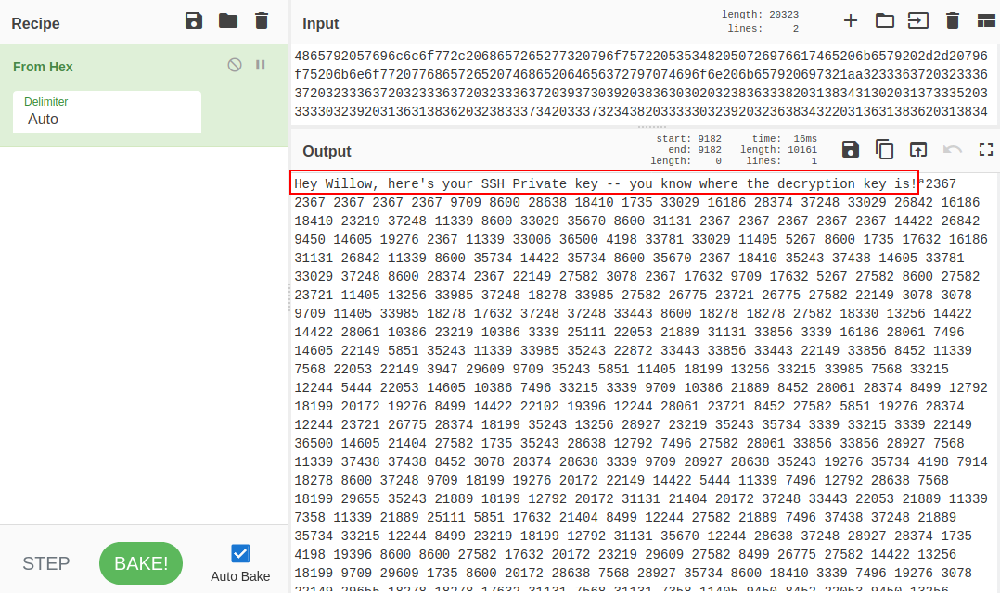
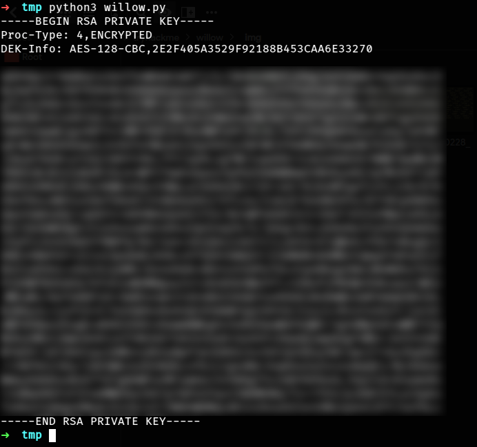
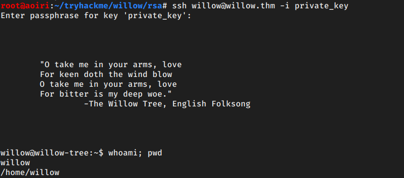
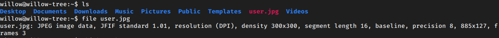
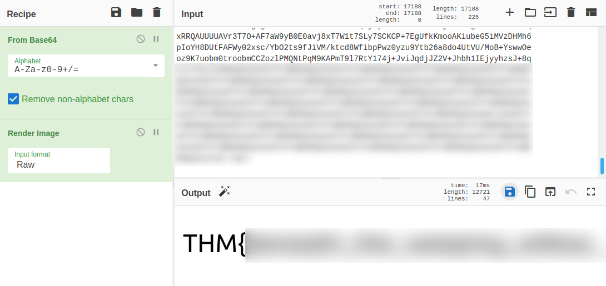
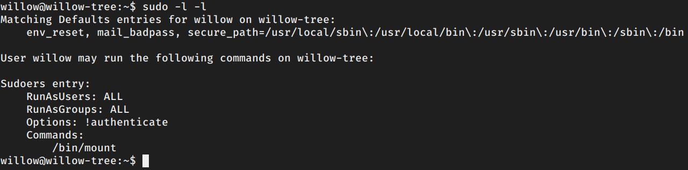
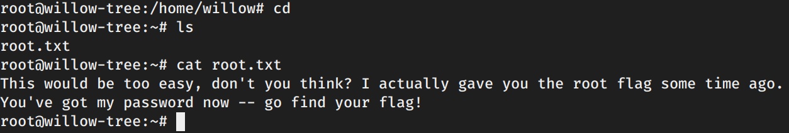
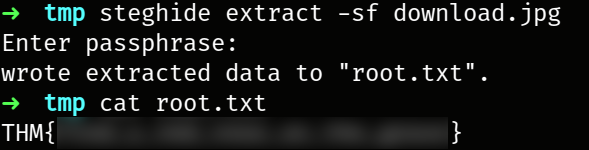

TryHackMe - Willow

Contenido
| Titulo | Willow |
|---|---|
| Room | Willow |
| Info | What lies under the Willow Tree? |
| Puntos | 380 |
| Dificultad | Media |
| Maker | MuirlandOracle |
NMAP
Escaneo de puerto tcp, en el cual nos muestra varios puertos abiertos.
# Nmap 7.80 scan initiated Fri Feb 28 14:00:08 2020 as: nmap -sV -p- --min-rate=1000 -o nmap_rate willow.thm
Nmap scan report for willow.thm
Host is up (0.19s latency).
Not shown: 65531 closed ports
PORT STATE SERVICE VERSION
22/tcp open ssh OpenSSH 6.7p1 Debian 5 (protocol 2.0)
80/tcp open http Apache httpd 2.4.10 ((Debian))
111/tcp open rpcbind 2-4 (RPC #100000)
2049/tcp open nfs 2-4 (RPC #100003)
Service Info: OS: Linux; CPE: cpe:/o:linux:linux_kernel
Service detection performed. Please report any incorrect results at https://nmap.org/submit/ .
# Nmap done at Fri Feb 28 14:01:52 2020 -- 1 IP address (1 host up) scanned in 103.49 seconds
GOBUSTER
Utilizamos gobuster para busqueda de directorios y archivos.
root@aoiri:~/tryhackme/new_rom# gobuster dir -u http://willow.thm/ -w /usr/share/wordlists/dirb/common_nofirst10.txt -q -t 25 -x php,html,txt
/index.html (Status: 200)
/index.html (Status: 200)
/server-status (Status: 403)
USER - Willow
PRIVATE KEY
En la pagina principal de willow encontramos una cadena en hexadecimal. 
Utilizamos CyberChef para decodificar el contenido de esta cadena. 
Èncontramos un mensaje en el que indica que la clave privada de Willow esta encriptada - Asumimos que willow es un usuario registrado en la maquina:
Hey Willow, here's your SSH Private key -- you know where the decryption key is!
Adjunto al mensaje una lista de numeros.
NFS
En el puerto 2049 encontramos un punto de montaje el cual puede utilizar cualquiera (nobody:nogroup), utilizamos mount para montar la carpeta permitida (/var/failsafe).
root@aoiri:~/tryhackme/willow# showmount -e willow.thm
Export list for willow.thm:
/var/failsafe *
root@aoiri:~/tryhackme/willow# mkdir tmp_nfs
root@aoiri:~/tryhackme/willow# pwd
/root/tryhackme/willow
root@aoiri:~/tryhackme/willow# mount -t nfs willow.thm:/var/failsafe /root/tryhackme/willow/tmp_nfs/
root@aoiri:~/tryhackme/willow# ls tmp_nfs/
rsa_keys
root@aoiri:~/tryhackme/willow# cd tmp_nfs/
root@aoiri:~/tryhackme/willow/tmp_nfs# cat rsa_keys
Public Key Pair: (23, *****)
Private Key Pair: (*****, *****)
root@aoiri:~/tryhackme/willow/tmp_nfs# ls -lah
total 12K
drwxr--r-- 2 nobody nogroup 4.0K Jan 30 10:31 .
drwxr-xr-x 3 root root 4.0K Feb 28 14:05 ..
-rw-r--r-- 1 root root 62 Jan 30 10:31 rsa_keys
root@aoiri:~/tryhackme/willow/tmp_nfs#
El contenido del archivo que encontramos en la carpeta es rsa_keys que contiene las claves para la clave publica y la clave privada.
root@aoiri:~/tryhackme/willow/tmp_nfs# cat rsa_keys
Public Key Pair: (23, *****)
Private Key Pair: (*****, *****)
En este post RSA Encription explica a la perfeccion como funcionan, encriptacion y desencriptacion de RSA. Para este reto escribi un pequeño script en python que por cada numero que encontramos en el mensaje, lo vamos a convertir a hexadecimal utilizando las claves (6—7, 3—7) del archivo rsa_keys, en este caso vamos a utilizar el de la clave privada para poder conectarnos atraves del servicio SSH. Una vez hecho lo anterior convertimos a texto el mensaje (lista) en hexadecimal que obtuvimos.

Ejecutamos nuestro script y obtenemos nuestra clave privada:

Utilizamos la clave para iniciar sesion en el servicio de SSH pero esta esta protegida por una frase.

Utilizamos John para obtener el hash de la clave y obtener la frase.

Una vez con la frase de nuestro archivo, iniciamos sesion en el servicio SSH y obtenemos nuestra shell con usuario Willow. 
Encontramos una imagen en la carpeta principal de Willow: 
La codificamos a base64 y utilizamos nuevamente CyberChef para renderizar nuestra imagen (podemos utilizar scp btw), obtenemos nuestra flag user.txt:

PRIVILEGE ESCALATION
Enumeramos los comandos que podemos ejecutar sin contraseña utilizando sudo sudo -l -l y vemos que podemos utilizar mount.

Revisamos /mnt/ y encontramos la carpeta /creds que no contiene nada.

Vemos el contenido de /dev en donde se supone estan las “particiones” montadas, y podemos ver inmediatamente hidden_backup lo cual no es muy comun de encontrar.

Ya que podemos utilizar mount con sudo vamos a proceder a montar esta “particion” en /mnt/creds (puede ser en cualquier otra carpeta a la que willow tenga acceso).

Encontramos las credenciales del usuario root y willow, cambiamos al usuario root y dentro de su carpeta encontramos un mensaje en root.txt.

La nota nos indica que la flag root.txt ya nos fue dada antes de que obtuvieramos una shell, recordemos que la primera flag la encontramos en la imagen, regresamos a la imagen que encontramos y extraemos su contenido con la contraseña de root, en donde podemos ver nuestra ultima flag. 